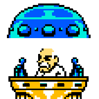
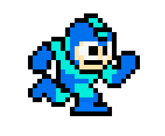

<div class="page-container page_shadow container_color mega_bg border_color">
    <div class="center_center">
      <div class="center">
        <button class="btn_pulse sm"  (click)="pushContainer.toggle()"><i class="fas fa-arrow-left"></i></button>
        <div class="btn_pulse sm">
          <wily-help-widget
            productKey="pe"
            elementKey="provider-dashboard"
            [helpSystemUrl]="environment.helpSystemUrl"
            [serviceUrl]="environment.helpServiceUrl"
            [canEdit]="true"
            theme="light"
            fontSize="24px">
          </wily-help-widget>
        </div>
        <button class="btn_pulse sm"  (click)="pushContainerRight.toggle()"><i class="fas fa-arrow-right"></i></button>
      </div>
      <div class="font_color_1" style="position: absolute;text-align: center;margin-top:100px;padding:15px;">
        <div>
          <div style="font-size:26pt;">Welcome to Wily</div>
          <div style="font-size:14pt;font-weight:500;">A Highly Customizable Angular Framework and Fully Responsive CSS Flexbox UI Starter Project.</div>
          <div style="font-size:10pt;padding-top:5px;">Far from being a madman, Dr. Wily was the only one who saw the truth.</div>
        </div>
      </div>
    </div>

    
    
</div>

<wily-push-container
  mainContentId="site-content"
  side="left"
  topOffset="30px"
  [closeOnResize]="false"
  [showSidePanel]="false"
  #pushContainer>
  <div>A Container of Coolness that Pushes</div>
</wily-push-container>

<wily-push-container
  mainContentId="site-content"
  side="right"
  topOffset="30px"
  [closeOnResize]="false"
  [showSidePanel]="false"
  #pushContainerRight>
  <div>A Container of Coolness that Pushes</div>
</wily-push-container>
